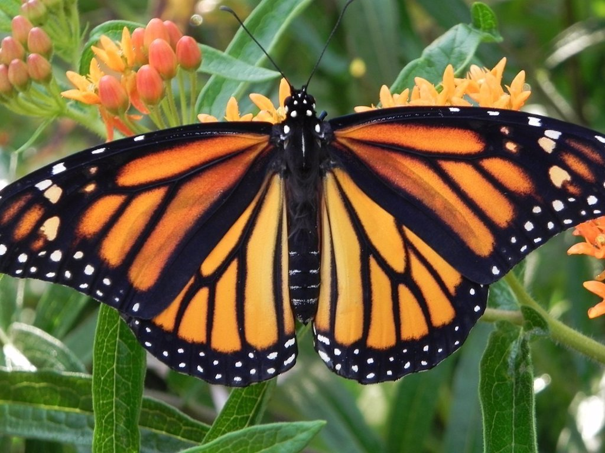

A pesar de ser un insecto pequeño y de su aparente fragilidad, la mariposa monarca realiza uno de los viajes
migratorios anuales más largos y famosos. Y pese a que apenas vuela unos cientos de metros en su zona de
distribución, cuando el otoño llega comienzan a volar sobre la superficie del lago Erie, situado entre
Estados Unidos y Canadá, en busca de temperaturas más cálidas. Así, millones de individuos salen de las
zonas de cría y se dirigen hacia el sur.
De hecho, esta mariposa sigue un patrón de migración estacional. Las poblaciones que se reproducen en el
este de Norteamérica viajan a fines del mes de agosto al Estado de México y Michoacán, en territorio mexicano.
El recorrido dura aproximadamente 2 meses y cada mariposa vuela más de 6,400 kilómetros. Se instalan en los
bosques de oyamel y vuelven al norte en la primavera.
La población del oeste del continente, por su parte, pasa el invierno en la costa de California, en Estados Unidos.
